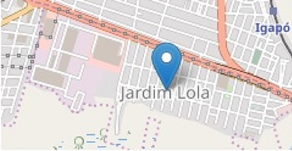

Nome do Bairro - Jardim LolaQuantidade de Moradores - 21.102 pessoas (Segundo IBGE 2018) Localização - Próximo a Ponte do Igapó Como chegar: (Do Centro de Natal) Basta crusar a ponte do Igapó e ao lado esquerdo estará em Jardim Lola; (Do Centro de São Gonçalo do Amarante) Basta vir sentido Natal e ao lado Direito estará em Jardim Lola. Vantagens - Ótima Localização, Variedade de Pontos Comerciais, Bancos e Hospitais ou Clínicas. Desvantagens - Área relativamente perigosa. Atrações - Praça Pública, Ginásio Poliesportivo. Empresas - Coteminas, Hapvida, Carajas, Caixa Econômica. Mapa |